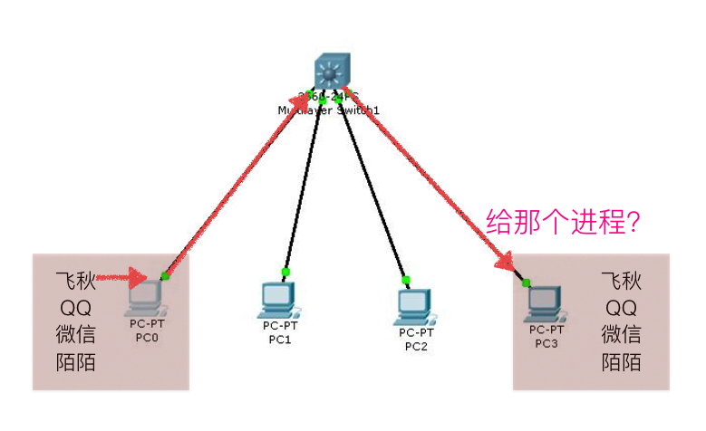
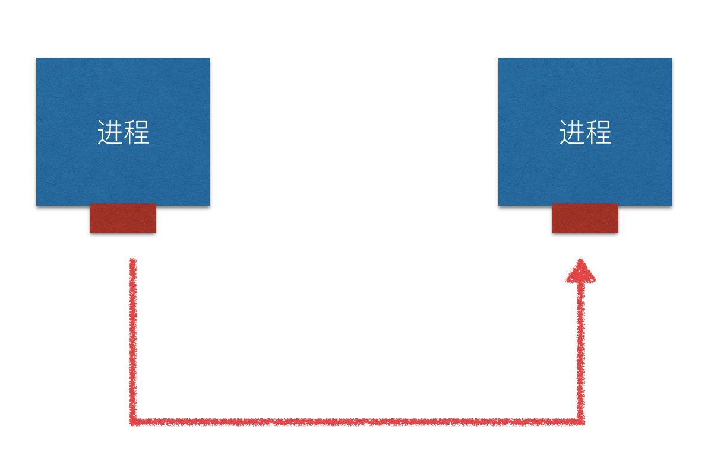

端口
1. 引入
ip地址用来标记一台电脑，为了能够标记电脑上运行中的程序，需要使用端口来标记
2. 什么是端口

端口就好比是一个房子的门，是出入这间房子的必经之路。

如果一个在运行中的程序需要收发网络数据，那么就需要有这样的端口
在linux系统中，端口可以有65536（2的16次方）个之多！
既然有这么多，操作系统为了统一管理，所以进行了编号，这就是端口号
3. 端口号
端口是通过端口号来标记的，端口号只有整数，范围是从0到65535
注意：
端口数可能由于不一样的*nix系统，可能不一样
4. 端口是怎样分配的
端口号不是随意使用的，而是按照一定的规定进行分配。
端口的分类标准有好几种，我们这里不做详细讲解，只介绍一下知名端口和动态端口
4.1 知名端口（Well Known Ports）
知名端口是众所周知的端口号，范围从0到1023
21端口分配给FTP服务
22端口分配给SSH服务
80端口分配给HTTP服务
可以理解为，一些常用的功能使用的号码是估计的，好比 电话号码110、10086、10010一样

一般情况下，如果一个程序需要使用知名端口的需要有root权限
4.2 动态端口（Dynamic Ports）
动态端口的范围是从1024到65535
之所以称为动态端口，是因为它一般不固定分配某种服务，而是动态分配。
动态分配是指当一个系统程序或应用程序程序需要网络通信时，它向主机申请一个端口，主机从可用的端口号中分配一个供它使用。
当这个程序关闭时，同时也就释放了所占用的端口号
4.3 怎样查看端口 ？
- 用“netstat －an”查看端口状态
- lsof -i [tcp/udp]:2425
5. 小总结
我们知道，一台拥有IP地址的主机可以提供许多服务，比如HTTP（万维网服务）、FTP（文件传输）、SMTP（电子邮件）等，这些服务完全可以通过1个IP地址来实现。那么，主机是怎样区分不同的网络服务呢？显然不能只靠IP地址，因为IP地址与网络服务的关系是一对多的关系。实际上是通过“IP地址+端口号”来区分不同的服务的。
需要注意的是，端口并不是一一对应的。比如你的电脑作为客户机访问一台WWW服务器时，WWW服务器使用“80”端口与你的电脑通信，但你的电脑则可能使用“3457”这样的端口。